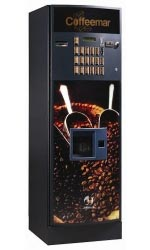

Контактная
информация
информация
Адрес:ул. Явар Алиев 22
Баку, Азербайджан AZ 1026,
Tel.: 012 424 31 48
E-mail: vending@vento.az
Coffeemar G500

Вместимость:
* Кофемолка с резервуаром вместимостью 3000г. кофейных зерен;
* 5 контейнеров вместимостью:
o 2250г. сухого молока;
o 3500 г. шоколада;
o 5000 г. сахара;
o 1500 г. кофе без кофеина;
o 2500г. растворимого чая;
o 500 стаканов и 500 палочек для размешивания.
Характеристики:
* палочки всех размеров;
* программируемый процесс подачи и размешивания ингредиентов;
* информационный дисплей на русском языке.
Габариты и конструкция: Металлические части сделаны из нержавеющей стали толщиной в 1 мм и внешним покрытием краской. Панель рекламы сделана из пластмассы.
* 1825х600х605 мм;
* вес - 150 кг;
* подсвечиваемая фронтальная панель: 211х560 мм и 1093х560 мм.
Рекламные панели:
В машине две рекламные панели следующих размеров:
| Ширина |
Высота |
Толщина |
|
| Дверная панель |
562,5 |
1093,5 |
3 |
| Верхняя панель |
563 |
213,5 |
3 |
Рекламные панели снабжены задней подсветкой и одной или более флуоресцентной трубкой.
Энергопотребление:
* Работа от сети 190-240В, 50 Гц, максимум 1,1 кВт.
Комплектация:
* Монетоприемник;
* Купюроприемник (по желанию покупателя);
* Автономная подача воды (помпа и бак).
Дополнительно:
* возможно снимать статистику и делать обновления с помощью ключа (карты);
* есть возможность передачи данных по GPRS;
* подача кипятка перед приготовлением напитка в холодное время года.
Отличительные преимущества аппарата Coffeemar G500:
* антивандальные противовзломные корпуса.
* корпус изготовлен из 1,5 мм коррозиеустойчивой стали.